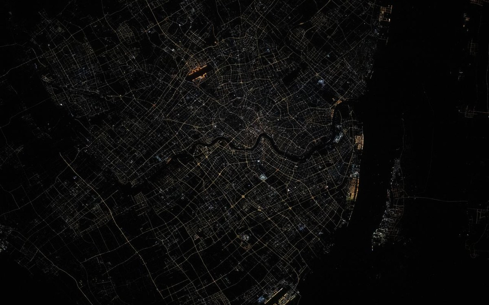
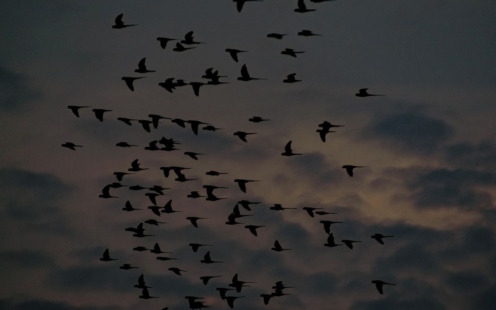
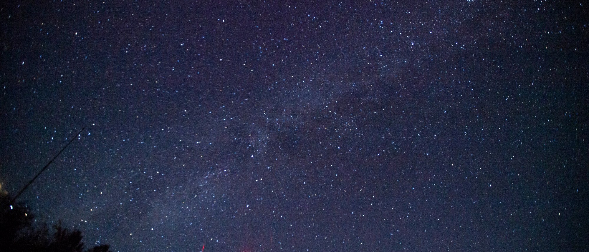

天文观测
最直接且最易量化的后果是：夜空被人造光抬亮后，暗弱天体不再可见。
Falchi 等人在 2016 年发布的《世界人造夜空亮度图集》，用 VIIRS 卫星辐射数据输入大气辐射传输模型，并用超过 35,000 个地面 SQM 测量值进行标定，得到的结果是：
- 全球 83% 的人口生活在有光污染的天空下；
- 99% 的欧洲人和美国人生活在有光污染的天空下；
- 60% 的欧洲人无法从家中看到银河。
由此产生两个层面的损失。业余观测方面，银河、星云等大面积暗弱目标从多数城市居民的视野中消失；专业观测方面，天文台被迫迁往更偏远的台址。

人类健康
人体依靠光照信号调节昼夜节律。夜间暴露于光照（尤其蓝光）会抑制褪黑素分泌，推迟入睡时间，影响睡眠质量与结构。这一层机制有较为一致的实验证据支持。
至于更长链条的后果，例如与某些代谢或内分泌疾病的关联，相关研究仍在进行，结论尚未统一，不宜将相关性表述为因果关系。
IDA 在其政策文件中的表述是审慎的：「已知或怀疑光污染会对自然生态系统、人类健康、公共安全、天文观测、能源安全和全球气候产生负面影响。」——「已知或怀疑」这一措辞本身，即体现了结论可靠程度的差别。
能源与经济成本
射向天空与无人区域的光不产生照明价值，构成纯粹的电费支出。该部分常被引用为「约 30% 的户外照明被浪费」，但比例随地区与评估口径差异明显，引用时应标明来源与适用范围。
对城市管理者而言，这一项通常最具说服力：治理收益可直接以电费下降衡量，无需依赖生态或天文方面的论证。

鸟类
许多候鸟在夜间迁徙，依赖星空与地磁定向。人造光干扰这一过程，产生两类后果：
- 迷航与聚集。鸟类被灯光吸引后会在光源周围盘旋，有时持续数小时，消耗本该用于迁徙的体力。大雾或低云天气下，被照亮的高楼会聚集大量鸟类。
- 撞击。被灯光吸引靠近建筑后，撞上玻璃幕墙。玻璃反射的夜空或室内植物影像会让鸟误判为可通行的空间。

其他动物与植物
夜间是许多动物的主要活动时段。人造光扰乱了两个基本条件：何时为夜，以及何处为暗。
- 夜行性捕食者（如猫头鹰、蝙蝠）依赖黑暗掩护觅食，光照会降低其捕猎效率；
- 夜行性猎物会因光照改变活动路线与时间，进而改变整个群落的空间分布；
- 沿水岸、林缘的照明会形成「光屏障」，阻碍动物在栖息地之间的移动。
这类影响的特点是间接且累积：并非直接致死，而是改变行为与分布，因此短期内不易察觉。
昆虫
趋光性是光污染最易观察到的后果，表现为夏夜路灯下聚集的虫群。其影响不限于个体死亡：
- 围绕灯具飞行至力竭死亡，或被灯具高温灼死；
- 聚集在光源附近，成为捕食者与寄生虫的集中猎场；
- 原本用于觅食、求偶、产卵的时间被消耗在趋光行为上。
昆虫是食物链的基础环节，也是重要传粉者，因此该类损失会向上传导，影响以昆虫为食的鸟类、蝙蝠及依赖昆虫授粉的植物。
植物
植物依赖光周期判断季节，日照长度变化触发萌芽、开花、落叶与休眠。夜间照明干扰这一判断，可能造成物候提前或延后。对城市行道树与公园绿地而言，可能表现为花期错位、落叶延迟与抗寒能力下降。
在光污染的各项影响中，这一项研究起步最晚。目前多数结论来自受控实验与有限地点的野外观察，尚不宜视为定论。
失去星空意味着什么
前述各项均可量化，此项不能，但其影响可能最为深远。
星空是人类定位自身的方式之一。方向、季节、时间、潮汐与航行，在历史上长期依赖对天空的观察。星座不仅是图案，也是口传叙事结构与许多文明宇宙观的起点。当银河从多数人的视野中消失，这些内容便从「抬头可见」变为「需专程前往才能看到」。
对在城市中成长的孩子而言，这意味着：他可能听过银河、看过照片，却从未在真实夜空下站立。这不是知识的缺失——知识可由书本获得——而是一种感受能力的缺失：对尺度、对黑暗、对自身位置的具体感知。
这一层价值难以进入成本收益分析，但它是本站所称「暗夜资源」中最难替代的部分。
